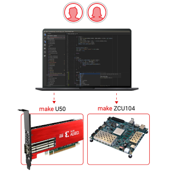

Vitis™ チュートリアル¶

すべての開発者に新しい設計経験を提供¶
Vitis 統合ソフトウェア プラットフォームを使用すると、FPGA、SoC、Versal ACAP などのヘテロジニアス ザイリンクス プラットフォームのエンベデッド ソフトウェアおよびアクセラレーション アプリケーションの開発ができます。エッジ、クラウド、ハイブリッド計算アプリケーションをアクセラレーションする統合プログラミング モデルが提供されます。
ハイレベル フレームワークとの統合に使用したり、アクセラレーションされたライブラリを使用して C、C++、Python で開発したり、RTL ベースのアクセラレータおよび下位レベルのランタイム API を使用して、インプリメンテーションをより詳細に制御できます。抽象度のレベルは、選択できます。
チュートリアル¶
Vitis 詳細チュートリアルでは、すべてのザイリンクス プラットフォームでアクセラレーションされたアプリケーションを運用する設計手法およびプログラミング モデルを使用して説明します。

Vitis AI を使用した機械学習の概要 (英語版)¶
Vitis、Vitis AI、および Vitis アクセラレーション ライブラリを使用して、純粋なソフトウェア定義フローを使用して完全なエンド ツー エンドのアクセラレーションされたアプリケーションをインプリメントする方法を学びます。ハードウェアの専門知識は必要ありません。
Tensorflow フレームワークを使用してザイリンクス ハードウェアをコンフィギュレーションするには、Vitis AI を使用します。Vitis AI を使用すると、ユーザーは推論モデルを数分で量子化、コンパイル、運用できます。
Vitis ハードウェア アクセラレータの概要¶
Vitis コア開発キットを使用して、C++、OpenCL、さらには Verilog や VHDL などの下位レベルのハードウェア記述言語 (HDL) で開発されたアクセラレーション アルゴリズムをビルド、解析、最適化する方法を説明します。
Vitis HLS、コンパイラ、アナライザー、デバッガーを使用してパフォーマンスのボトルネックを特定し、Alveo カードを使用してアルゴリズムの効率とパフォーマンスを向上させる方法について説明します。
AI エンジン開発 (英語版)¶
ザイリンクス初の ACAP (Adaptive Compute Acceleration Platform) デバイスである Versal を開発するための Vitis コア ツールの使用方法を説明します。
Versal の AI エンジン アレイと PL IP/カーネルおよびエンベデッド プロセッサ上で動作するソフトウェア アプリケーションを組み合わせて使用し、高度なアルゴリズムをターゲットにし、開発、運用する方法について説明します。
プラットフォームの作成¶
独自のボードをターゲットにしたカスタム プラットフォームのビルド方法と、既存のプラットフォームの変更と拡張方法について説明します。
プラットフォームのハードウェア ソースの設定方法、ランタイム ソフトウェア環境の構築方法、ソフトウェアおよびハードウェア エミュレーションのサポートの追加方法などを説明します。
ランタイムおよびシステムの最適化¶
アプリケーションの CPU 側を最適化して効率的にメモリを割り当てる方法、システム レベルのイベントを順番に並べる方法などについて説明します。
また、システム レベルのトポロジと下位レベルのハードウェア インプリメンテーションを制御する方法について説明します。